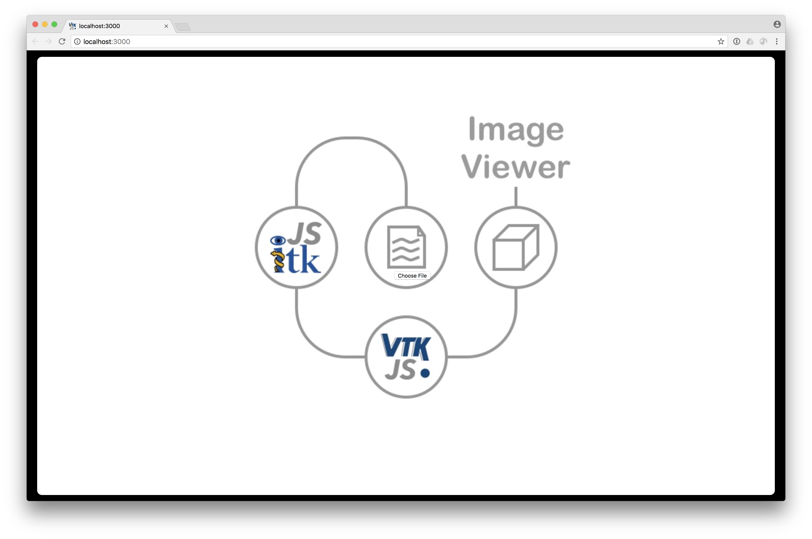

ITK/VTK Viewer can be used as a command line tool for opening and visualizing your local data file.
Installation
First, install Node.js, if not already installed. After Node.js is installed, the node and npm executables should be in your PATH.
$ npm install itk-vtk-viewer -g |
This command will install the application globally, which will provide a new command line executable, itk-vtk-viewer:
$ itk-vtk-viewer |
Quick start
To visualize an image, pass the path to the file to visualize. By default, a new tab will open in your browser with your visualization.
$ itk-vtk-viewer ./MRHead.nrrd |
Drag and drop viewer
Instead of specifying files via the command line,
- drag and drop,
- click on the viewer page, or
- press the Enter key
after starting the executable without positional arguments:
$ itk-vtk-viewer |
